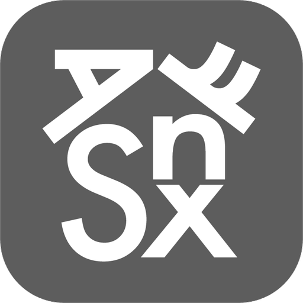

愛發筆
AiPhaBi
繁
简
字級
小
中
大
簡介
基礎學習
字根表
字根練習
取碼原則
約定字表
簡碼
流暢模式
詞組連打
自動上屏
體驗工具
線上試打
拆碼查詢
後記
中文字形輸入法
愛發筆
AiPhaBi
發掘中文打字的樂趣
跳過動畫
重播動畫
猜猜看，這個字怎麼打？
猜猜看要打哪幾個字母
看答案
換一個字
想體驗更多？
馬上學習更多字根
字根取形於英文字母
·
免記鍵位
·
字根單編碼
·
26鍵
·
常用字低重碼
自己發掘
我想學習更多字根